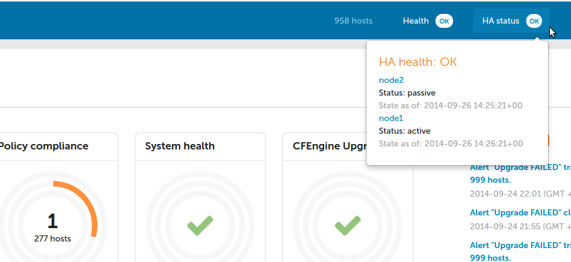

High Availability
Overview
Although CFEngine is a distributed system, with decisions made by autonomous agents running on each node, the hub can be viewed as a single point of failure. In order to be able to play both roles that hub is responsible for - policy serving and report collection - High Availability feature was introduced in 3.6.2. Essentially it is based on well known and broadly used cluster resource management tools - corosync and pacemaker as well as PostgreSQL streaming replication feature.
Design
CFEngine High Availability is based on redundancy of all components, most importantly the PostgreSQL database. Active-passive PostgreSQL database configuration is the essential part of High Availability feature. As PostgreSQL supports different replication methods and active-passive configuration schemes, it doesn't provide out-of-the-box database failover-failback mechanism. To support the latter one well known cluster resources management solution based on Linux-HA project has been selected.
Overview of CFEngine High Availability is shown in the diagram below.

One hub is the active hub, while the other serves the role of a passive hub and is a fully redundant instance of the active one. If the passive host determines the active host is down, it will be promoted to active and will start serving the Mission Portal, collect reports and serve policy.
Corosync and pacemaker
Corosync and pacemaker are well known and broadly used mechanisms supporting cluster resource management. For CFEngine hub needs those are configured so that are managing PostgreSQL database and one or more IP addresses shared over the nodes in the cluster. In the ideal configuration one link managed by corosync/pacemaker is dedicated for PostgreSQL streaming replication and one for accessing Mission Portal so that once failover happens the change of active-passive roles and failover transition is transparent for end user. He can still use the same shared IP address to log in to the Mission Portal or use against API queries.
PostgreSQL
For best performance, PostgreSQL streaming replication has been selected as database replication mode. It provides capability of shipping WAL files from active server to all standby database servers. This is a PostgreSQL 9.0 and above feature allowing continuous recovery and almost immediate visibility of data inserted to primary server by the standby. For more information about PostgreSQL streaming replication please see this.
CFEngine
In a High Availability setup all the clients are aware of existence of more than one hub. Current active hub is selected as a policy server and policy fetching and report collection is done by the active hub. One of the differences comparing to single-hub installation is that instead of having one policy server, clients have a list of hubs where they should fetch policy and initiate report collection if using call collect. Also after bootstrapping to either active or passive hub clients are implicitly redirected to active one. After that trust is established between the client and both active and passive hub so that all clients are capable to communicate with both. This allows transparent transition to passive hub once fail-over is happening, as all the clients have already established trust with passive hub as well.
Mission Portal
Mission Portal in 3.6.2 has a new indicator whitch shows the status of the High Availability configuration.

High Availability status is constantly monitored so that once some malfunction is discovered the user is notified about the degraded state of the system. Besides simple visualization of High Availability, the user is able to get detailed information regarding the reason for a degraded state, as well as when data was last reported from each hub. This gives quite comprehensive knowledge and overview of the whole setup.

Inventory
There are also new Mission Portal inventory variables indicating the IP address of the active hub instance and status of High Availability installation on each of hubs. Looking at inventory reports is especially helpful to diagnose any problems when High Availability is reported as degraded.

CFEngine High Availability installation
Existing CFEngine Enterprise installations can upgrade their single-node hub to a High Availability system in version 3.6.2. Detailed instruction how to upgrade from single hub to High Availability or how to install CFEngine High Availability from scratch can be found here.